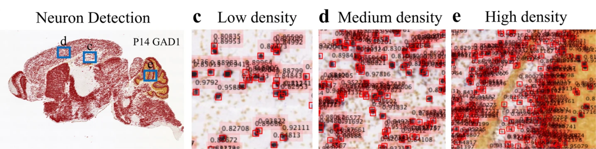
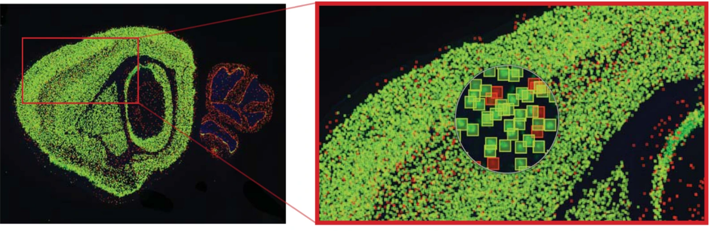
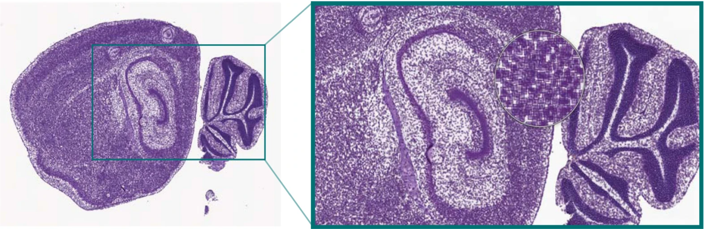
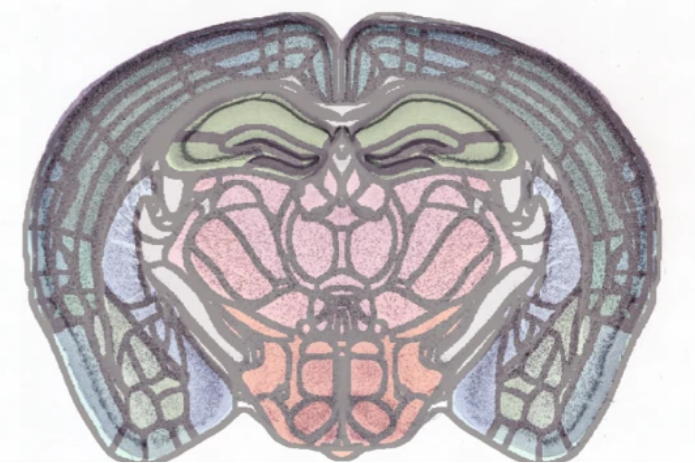
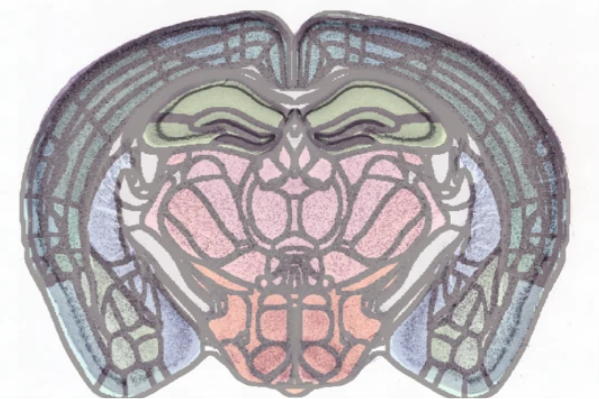
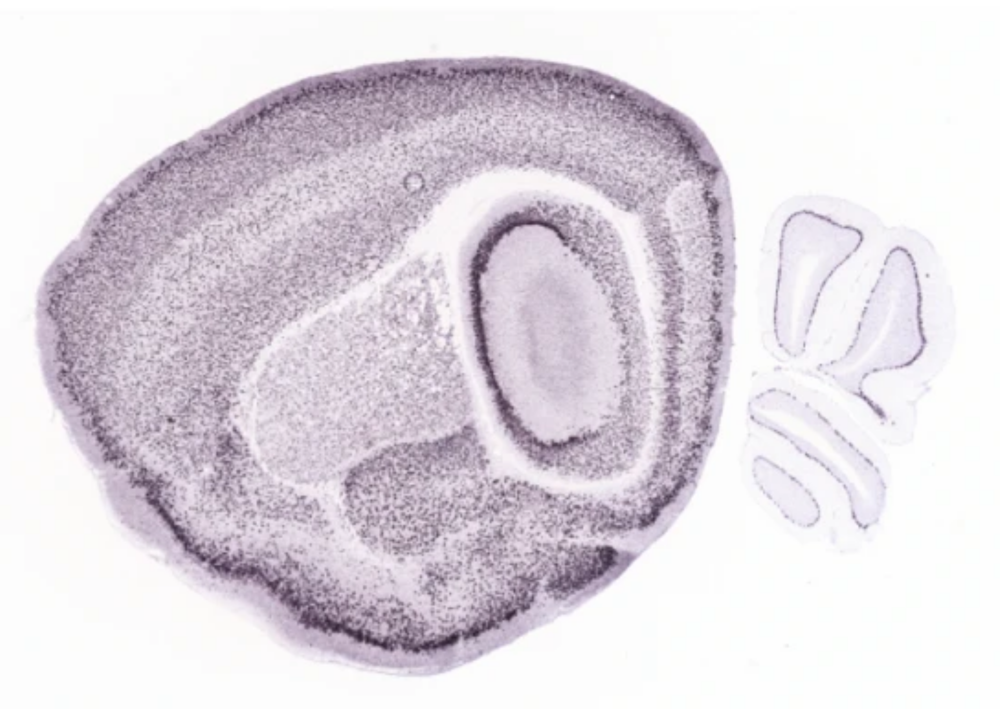
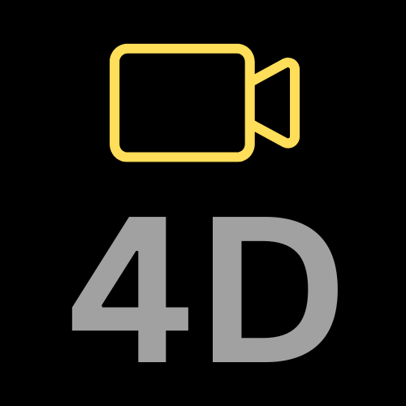

In the complex and high-stakes world of drug discovery, the journey from initial concept to a viable therapeutic solution is fraught with challenges. Traditional methods which often rely on isolated techniques and siloed processes, struggle to keep pace with the growing demand for speed, accuracy, and innovation. This is particularly critical in brain disorders, where the urgency to discover effective therapies is heightened by the growing prevalence of conditions like Alzheimer’s, Parkinson’s, and epilepsy. According to the Tufts Center for the Study of Drug Development, the average cost of bringing a new drug to market now exceeds $2.6 billion, and the process can take over a decade to complete. Yet, despite these enormous investments, the success rate remains alarmingly low. A report from the Biotechnology Innovation Organization (BIO) reveals that only 1 in 13 drug candidates that enter clinical trials will ultimately receive FDA approval. This fragmented approach slows down drug development, limiting breakthroughs and overburdening wet labs.
The statistics are staggering
The urgency to address brain disorders is staggering based on the statistics from the Global Burden of Disease (GBD) study. In the U.S., Alzheimer’s affects around 5 million people, with numbers projected to triple by 2050. Parkinson’s disease, the fastest-growing neurological disorder, currently impacts nearly 1.3 million Americans, a figure expected to rise to by 2030. These conditions emphasize the critical need for innovative drug discovery solutions.
In an era where precision, efficiency, and innovation are paramount, particularly in the fight against brain disorders, the industry desperately needs a unified, multimodal end-to-end solution that seamlessly integrates diverse methodologies. Such a solution would allow researchers to utilize the full spectrum of all modalities, transforming the way we discover and develop new drugs, and reducing both the time and cost associated with bringing life-saving therapies to market.
Introducing your wet lab’s multimodal co-pilot
Our platform integrates advanced tools across 2D, 3D, and 4D data modalities, enhancing your wet lab’s capabilities with precision and efficiency. This integration allows for a seamless transition between different phases of drug development, ensuring that every piece of data is accurately captured and analyzed.
2D Data

Our platform excels in neuron detection and segmentation, utilizing advanced AI that requires minimal training data. This capability ensures precise identification of neuronal structures and facilitates the study of specific neuronal subtypes, advancing research on distinct neuron populations.
An integrated intensity control allows you to fine-tune neuron segmentation, ensuring precise detection and quantification of neurons labeled with specific enhancers while filtering out non-target signals for accurate analysis.
GAD1 (red), CamkIIa-Cre/Ai14 (green)

CamkIIa mRNA in situ hybridized

GAD1 (red), Gpr26-CreKO250/Ai14 (green)
NISSL staining
Our platform also provides an intensity control to fine-tune neuron segmentation by selecting the optimal intensity threshold, enabling precise detection and quantification of individual neurons labeled with specific enhancers, while filtering out non-target signals for accurate analysis.
Brain Section with Multiple Biomarkers


Biomarker 1 Intensity Control


Biomarker 2 Intensity Control


Biomarker 3 Intensity Control
Our model significantly outperforms current state-of-the-art approaches, as evidenced by its superior performance. The HD95 score is a critical indicator of accuracy in medical imaging, particularly in assessing how closely segmented regions align with ground truth data. Our model is more precise in capturing complex anatomical structures, offering a clear advantage in tasks where accurate boundary delineation is crucial.
3D Data

Our platform provides precise brain registration by aligning brain atlases to 2D and 3D datasets, ensuring accurate spatial correspondence for comparative anatomical analysis. This process enables the robust integration of our atlas with various imaging modalities, facilitating the detailed mapping of anatomical regions, crucial for understanding brain structure and function relationships.
Accurately registered brain images ensure that each anatomical region is mapped consistently across different imaging modalities, enabling precise localization and comparative analysis. This alignment facilitates a deeper understanding of complex brain structures and their functions, providing a robust foundation for neuroanatomical studies.

Precise 3D brain registration ensures accurate alignment of brain regions, enabling consistent neuron quantification within specific areas. This technology allows for reliable counting and analysis of neurons in specific brain regions offering clearer insights into brain function and neurological conditions.
 



Our model outperforms leading competing models by a significant margin. Utilizing advanced algorithms, we ensure that each anatomical region is mapped with precision, enabling researchers to gain deeper insights into the brain’s architecture. This precision is crucial for accurate neuroanatomical studies, driving innovation and discovery in neuroscience.
4D Data
Our platform offers precise 4D tracking of animal behavior, allowing for the detailed analysis of movement and task performance over time. By capturing and tracking key points, researchers can accurately assess how animals interact with their environment and respond to specific tasks. This level of monitoring is crucial for understanding behavioral changes, providing essential insights for evaluating the efficacy of interventions or treatments.
Our platform quantifies the animal’s performance in various tasks, such as motor coordination, spatial memory, and more. This enables researchers and clinicians to monitor progress, identify areas of improvement, and make data-driven decisions in their studies. Whether you’re focusing on rehabilitation, learning processes, or cognitive assessments, our tool delivers the high-resolution tracking needed to quantify and understand behavioral outcomes.
Multimodal Insights
The chord plot illustrates the intricate relationships between biomarkers, brain regions, and behavioral tasks. By mapping these connections, our platform helps you identify how specific biomarkers are expressed in brain regions and, consequently, how their expression correlated to performance in behavioral task. This is one example of how multimodal insights can help you uncover the mechanisms behind these outcomes, providing a deeper understanding of brain function and behavior.
Our platform is more than just a tool
Our platform redefines drug discovery by bridging spatial genomics with advanced neuroimaging and
behavioral analytics. We offer seamless integration from neuron segmentation to mapping gene
expression in brain region, enabling precise correlation between molecular data
and brain function.
This holistic approach accelerates the discovery of targeted therapies by directly linking genetic
insights to behavioral outcomes. With cutting-edge tools across 2D, 3D, and 4D data modalities, our platform
is indispensable for driving innovation, ensuring that every step from molecular analysis to
behavioral assessment is executed with precision and efficiency.
Learn more about our work

2024
An enhancer-AAV toolbox to target and manipulate distinct interneuron subtypes
Elisabetta Furlanis, Min Dai, Brenda Leyva Garcia, Josselyn Vergara, Ana Pereira, Kenneth Pelkey, Thien Tran....
2024
Segment AnyNeuron
Taha Razzaq, Ahmed Qazi, Asim Iqbal

2023
Multimodal 3D Image Registration for Mapping Brain Disorders
Hassan Mahmood, Syed Mohammed Shamsul Islam, Asim Iqbal